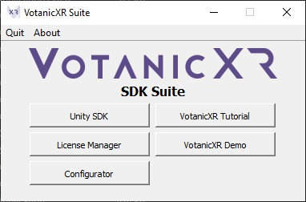

VotanicXR is an end-to-end open XR experience authoring platform for multimedia asset management, interaction design, machine interface integration, and cross-platform deployment of extended reality applications. It is an integral part of the VOTANIC VR system featuring a comprehensive, flexible, robust ecosystem of tools, libraries, and resources that enables creators of varying calibre to easily build and deploy extended reality applications to a range of VR systems.
Overview
VotanicXR is shipped as the VotanicXR Suite, including a bundle of tools and utilities providing a well-rounded user experience to XR developers.

The VotanicXR Suite includes the following main components:
VotanicXR for Unity SDK
Plug-in for the Unity with a range of built-in features for creating cross-platform XR applications.
Votanic License Manager
Utility for activating and renewing licenses of VotanicXR & related applications.
VotanicXR Configurator
Stand-alone application providing a graphical user interface to configure VotanicXR applications and the XR environment.
VotanicXR Feature Demo
Playable feature demo showcasing some main features of VotanicXR, tailored for playing in supported VR Headsets and the desktop PC.
VotanicXR Tutorial Link to this VotanicXR guide and tutorial.
License Options
VotanicXR may be downloaded and evaluated for free. A free evaluation license can be obtained from us for activation of the VotanicXR for Unity SDK, currently there is no enforced time limit for the evaluation, the evaluation license may be required to reactivate occasionally to extend the evaluation.
Academic License and Professional License are also available which remove certain limitations of the Evaluation License. Please contact us if you are interested to acquire an Academic License or Professional License from us.
It is possible to use VotanicXR without activation (unregistered copy), although with significant limitations. The features for different licenses are summarized below:
| Unregistered Copy |
Evaluation License |
Academic License |
Professional License |
|
| Locomotion | ✔️ | ✔️ | ✔️ | ✔️ |
| Interactions | ✔️ | ✔️ | ✔️ | ✔️ |
| Behaviour System | ✔️ | ✔️ | ✔️ | ✔️ |
| In-Game Menu | ✔️ | ✔️ | ✔️ | ✔️ |
| In-Game Tools | ✔️ | ✔️ | ✔️ | ✔️ |
| VotanicXR Configurator | ✔️ | ✔️ | ✔️ | ✔️ |
| Cross-Platform Input System | ❗ | ❗ | ❗ | ✔️ |
| 1 virtual tracker | 2 virtual trackers | 3 virtual trackers | 3 virtual trackers | |
| 1 xinput controller | 2 xinput controllers | 2 controllers of any type (xinput, dinput, gaming wheel, etc.) | No limitation on number and types of controllers / trackers / devices | |
| 2 VRPN tracker/button/axis | 4 VRPN tracker/button/axis | 8 VRPN tracker / button / axis | ||
| 1 OpenVR controller | 2 OpenVR controllers | 2 OpenVR controllers | ||
| Multi-User Networking & Network Messenger | ❗ | ❗ | ❗ | ✔️ |
| Max. 2 connections | Max. 4 connections | Max. 8 connections | Unlimited connections | |
| Media Player | ❗ | ❗ | ❗ | ✔️ |
| Max. 2 media per media player | Max. 4 media per media player | Max. 8 media per media player | Unlimited media | |
| Play Time | 1 minute | 15 minutes | Unlimited playback | Unlimited playback |
| Commercial Use | ❌ | ❌ | ❌ | ✔️ |
| Watermark | Unregistered Version Watermark |
Evaluation Version Watermark |
Academic Version Watermark (30 seconds) |
No Watermark |
Third-Party Licenses
VotanicXR utilizes some third-party open source packages, the list of third-party software and their licenses can be accessed here.